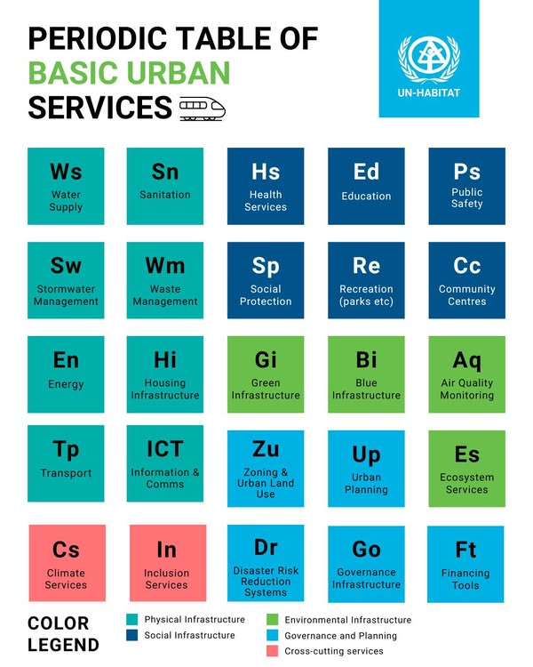

The index's background
Project based on the UN's project UN-Habitat".
UN aims "a better quality of life for all in an urbanizing world".
Some tools are available to achive it, such as data and parameters reference like a Periodic Tables (below) and the City Prosperity Index (CPI).
However, these information is neither fully spatialized (just some cities) nor have neighbourhood resolution, i.e. it is useful to compre cities but not neighbourhood within the cities.
We did it for you! We used the UN's ideas and spatialized the information to a city level.
Explore the maps to see how different factors like green spaces, summer days, hot days, and tropical nights contribute to the overall life quality index.
Use the sidebar to select a city and view its detailed map and life quality data.
Font (Figure): UN Habitat on Facebook